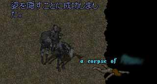

<< 鉱山PKを始める方へ >>
まず、友達がいなくなることを前提にお考え下さい。
赤キャラいるぜーなど、口が裂けても言ってはいけません。
鉱山PK=底辺
それを自覚した上で始めましょう。
ギルドに入ってる人はギルドを抜けて下さい。
ギルメンが後ろ指差されるだけです。
できれば、メインシャード以外で作ることをお勧めします。
・スキル構成
生産相手ですので、GMとかならなくていいです。
だいたい９０くらいあれば、いいです。
お勧めスキル構成
（田中君のスキル構成です）
| メイジ | ９２くらい。EX,EB、打てればnp |
| EI | ９０くらい。相手も裸みたいのが多いですが、HQとか着られると殺しにくいです。 |
| 霊話 | ９８くらい。GMになると殺した相手の罵詈雑言が聞こえ欝になります。 秘薬が無くても回復できるのがおいしい。 |
| ネクロ | ６０くらい。友達がいないのでお気に入りペットが死んでもどうしようもありません。 馬を殺し、ねくろ馬で出陣。 |
| 瞑想 | ９０くらい。秘薬拾いながら歩いてればGM以上も夢じゃない。 |
| 素手 | ９０くらい。相手が生産でも皮集めとかで武器スキルを持っている場合があります。 回避用にもいいし、貧乏なので武器とかないのでピッタリ。SPMもおいしい。 |
| ハイド | ５０くらい。堀師が来るまでハイド。２ちゃんとか見て待ってればいい。 |
| キャンプ | １５くらい。どこでも落ちれる。友達とか家とか無いから必須。 |
| トラッキング | ２０．１ハイド堀りが多いので必須。 |
残り、掘り。殺した堀師の石をとって溶かすの失敗すればいい。
対人にはレジ必須とありますが、相手は生産です。対人じゃありません。対生産です。
戦闘スキルのある堀師や、普通のPvPerに会ったら死ねばいい。
さあ、準備が整ったら、鉱山を回ろう。
鉱山本を１冊作れば、あとはハイドで待とう！
